the link of articles
There are just a few things you’ll need in order to get ready for all the cool web design stuff you can do with the command line. Many generic introductions to the command line will focus on things like creating folders, moving files around, navigating your system and so on. I find that with a web design focus I rarely ever use these types of commands.
When I first started learning the command line I also encountered plenty of tutorials frequently jumping straight into instructions like “Type blahdee blah blah into your terminal” or “Run the command bloop beep boop.” This typically leaves someone brand new to the command line saying, “Hold up a minute, what is my terminal, where do I find it, how do I open it and how do I use it?”
In this tutorial we’re going to make sure you don’t have the same problem. We’re going to start at the very beginning. You’ll learn all the essentials of working with a terminal or command prompt including how to open it, how to run commands, how to repeat commands, how to target your project folder when running commands, and how to deal with the most common error message you’ll see.
This series will provide the specific steps needed for both Mac and Windows–sorry Linux guys. However, I’m guessing that just by being a Linux user you’ll probably already have a degree of familiarity with command line. As well as that, being a “‘nix system” the majority of Mac commands are identical on Linux so you should be all good to follow along anyway.
A Note on GUI Apps
I know what you might be thinking, and yes, it is possible to use GUI apps to handle some of these types of processes; I often do so myself. However, GUIs designed for everybody are by necessity a one size fits all solution, so if you find you want to do something an app doesn’t provide for, you’re stuck.
By the time you've followed the tutorials in this series you'll have the know-how to be able to roll your own command line powered projects, any time, and in any way you need them.
What is the Command Line?
In a nutshell, the command line gives you a way to skip working with a visual interface so you can get your hooks deeper into the way things are processed and have more control.
To give you some background, when computers first arrived on the scene the only way you could interact with them was via typed commands processed by command line interfaces (CLIs). Eventually graphical user interfaces (GUIs) emerged giving rise to the visual “point & click” interaction we’re used to in operating systems and software today.
In the world of web design things have evolved in the other direction. To begin with, almost all our tools were GUI based software. Only in relatively recent times have CLI based solutions for web design problems become accessible enough that the payoff makes it well and truly worth learning to use them.
The first thing to understand about the command line is that in order use it you need a specialized program to type your commands into.
There are several different options available, however in this series we’ll just be using the default programs that ship with Mac and Windows. On Mac the program used to work with the command line is called “Terminal” and on Windows it’s called “Command Prompt”.
How to Open a Terminal / Command Prompt
Actually finding and running the terminal / command prompt isn’t immediately obvious if you’ve never used either before. Here’s how to do it on Mac and Windows.
On Mac
On Mac, the easiest way to open a terminal is just to go to your Launchpad and search for Terminal there.
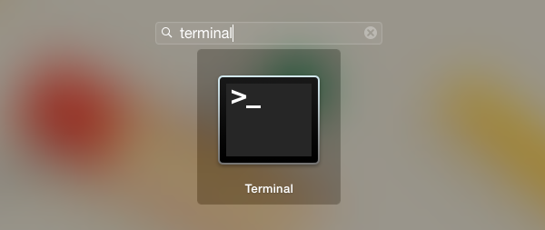
The Terminal on Mac looks like this:
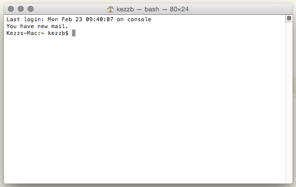
Once you have it running, pin that sucker to your dock. Trust me, you’re going to want it there.
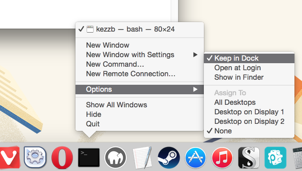
On Windows
In Windows parlance the command line is done via Command Prompt.
On Windows 8: from the start screen go to Apps, and under Windows System choose Command Prompt.
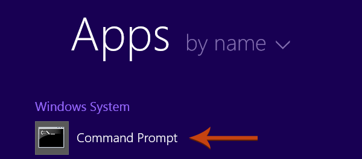
Alternatively press Windows key plus R to open a run window. In the field labelled Open type cmd and click the OK button to start the command prompt.
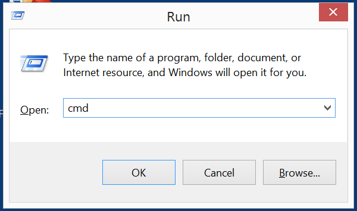
The Command Prompt on Windows looks like this:
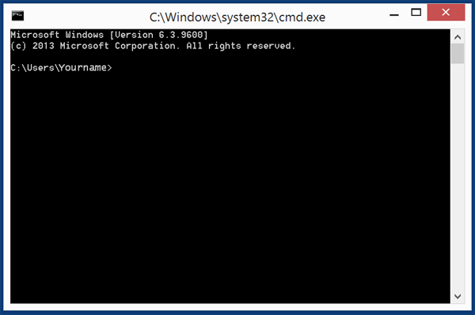
Quick Note: For brevity, instead of saying “terminal / command line” throughout the series I’ll just use the word “terminal” from here on, unless referring to Windows specific instructions.
Running and Repeating Commands
To run a command, wait until you see a prompt. On Mac you can recognize the prompt by the $ sign it ends with, and on Windows it ends with a > sign:
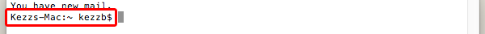
Prompt on Mac Terminal
 Prompt on Windows Command Prompt
When you see a prompt you can type in your command then press enter to run it:
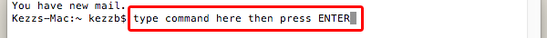
One super handy thing to know is that if you want to repeat a command you can press the up and/or down arrow on your keyboard to scroll through previously entered commands.
You’ll find there are often commands you’ll want to run more than once, and being able to just arrow up then press enter is a lot faster than retyping commands.
Opening a Terminal in a Specific Folder
For most of the web design tasks you’ll carry out using the command line you’ll need your terminal to be pointed at the folder housing your project.
Your terminal will display the name of the folder you’re currently working inside:
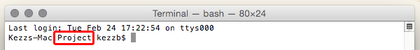
It is possible to navigate your way around your computer using the cd command, short for “change directory”. However, you’ll likely find it a whole lot easier if you can just right-click inside your project folder, then open a terminal up from there already pointed at the right place.
I personally do this all the time, even when using the “cd” command would probably be quicker, as my designer brain just prefers to work this way. Here’s how you can do this on each operating system.
On Mac
I use an app called XtraFinder (free, and has a bunch of really helpful features) which allows you to add a New Terminal Here option to the context menu in Finder.
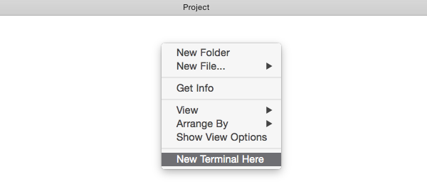
On Windows
Hold down Shift and right-click inside your project folder. In the context menu you should see an option reading Open command window here.
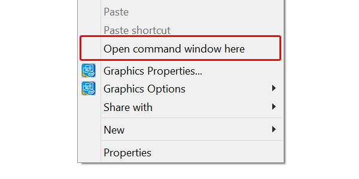
On Windows this is always how I open a command prompt as I find it to be the easiest way.
EACCES You Don’t Have Permission? Sudo.
One of the things you might find yourself running into often on Mac is one variety or another of an error message containing the letters EACCES.
It will often be accompanied by something like “Please try running this command again as root/Administrator.”
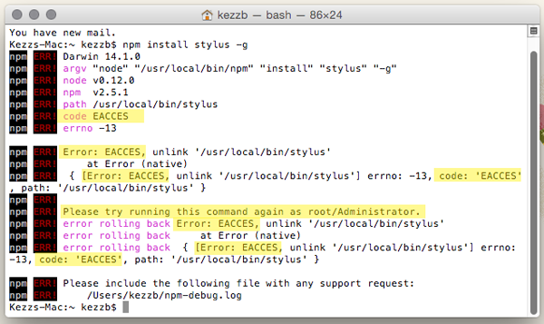
If, or when, you see this it just means you’re trying to complete a task that requires elevated access privileges. This system is in place to help make sure that nobody can make significant changes to your machine without authorization.
The easiest way to verify that you are indeed authorized is by adding the word sudo to the beginning of your command, which is short for “super user do”.
You’ll then be asked to enter your password before you can proceed.
When you add sudo to a command you’re operating as the “super user” of the system rather than a regular old user. With these elevated privileges you should find the command you’re trying to run works just fine.
Alternatives to sudo
You should be aware that generally speaking there are ways other than sudo to get around access level errors, such as changing the way permissions are setup on your machine. However, the steps typically required for these types of processes are a little beyond the basics level we’re covering here.
You'll be fine to use sudo in the context we’ll be covering in this series. That said, when you’re more comfortable with command line you may want to seek out those other options.
Here’s one process to bookmark for later on fixing npm permissions, the relevance of which will become apparent in a later tutorial.
How sudo Use Will Be Indicated in this Series
Wherever you may have to use sudo in a command, I’ll write the command out like so:
1
[sudo] command here
This doesn’t mean you should literally type out [sudo] with the square brackets included, but rather that you may or may not need to use sudo, i.e.
1
sudo command here
or
1
command here
If in doubt, you can always try the command without sudo and then try again with it, if you see an EACCES error.
In the Next Tutorial
In the next tutorial we’ll jump straight into techniques you can put to work in your existing web design workflows, by stepping through how to use command line for third party package management.
You'll learn how to get started with two of the most popular package management systems on the web today, and how to use them to find, install and update packages for use in your projects.
I'll see you there!
Prompt on Windows Command Prompt
When you see a prompt you can type in your command then press enter to run it:
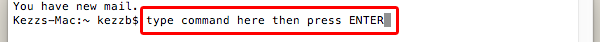
One super handy thing to know is that if you want to repeat a command you can press the up and/or down arrow on your keyboard to scroll through previously entered commands.
You’ll find there are often commands you’ll want to run more than once, and being able to just arrow up then press enter is a lot faster than retyping commands.
Opening a Terminal in a Specific Folder
For most of the web design tasks you’ll carry out using the command line you’ll need your terminal to be pointed at the folder housing your project.
Your terminal will display the name of the folder you’re currently working inside:
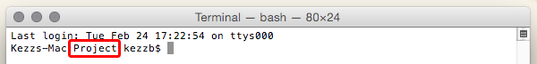
It is possible to navigate your way around your computer using the cd command, short for “change directory”. However, you’ll likely find it a whole lot easier if you can just right-click inside your project folder, then open a terminal up from there already pointed at the right place.
I personally do this all the time, even when using the “cd” command would probably be quicker, as my designer brain just prefers to work this way. Here’s how you can do this on each operating system.
On Mac
I use an app called XtraFinder (free, and has a bunch of really helpful features) which allows you to add a New Terminal Here option to the context menu in Finder.
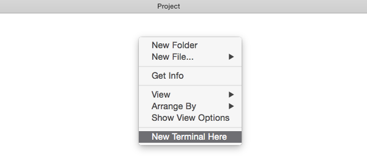
On Windows
Hold down Shift and right-click inside your project folder. In the context menu you should see an option reading Open command window here.
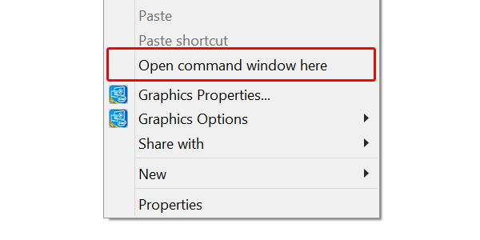
On Windows this is always how I open a command prompt as I find it to be the easiest way.
EACCES You Don’t Have Permission? Sudo.
One of the things you might find yourself running into often on Mac is one variety or another of an error message containing the letters EACCES.
It will often be accompanied by something like “Please try running this command again as root/Administrator.”
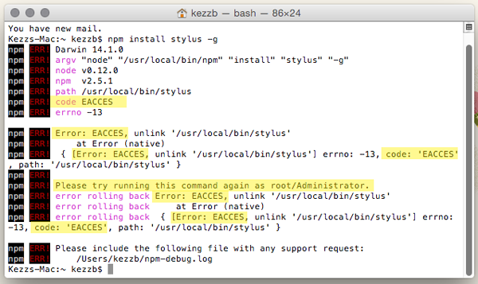
If, or when, you see this it just means you’re trying to complete a task that requires elevated access privileges. This system is in place to help make sure that nobody can make significant changes to your machine without authorization.
The easiest way to verify that you are indeed authorized is by adding the word sudo to the beginning of your command, which is short for “super user do”.
You’ll then be asked to enter your password before you can proceed.
When you add sudo to a command you’re operating as the “super user” of the system rather than a regular old user. With these elevated privileges you should find the command you’re trying to run works just fine.
Alternatives to sudo
You should be aware that generally speaking there are ways other than sudo to get around access level errors, such as changing the way permissions are setup on your machine. However, the steps typically required for these types of processes are a little beyond the basics level we’re covering here.
You'll be fine to use sudo in the context we’ll be covering in this series. That said, when you’re more comfortable with command line you may want to seek out those other options.
Here’s one process to bookmark for later on fixing npm permissions, the relevance of which will become apparent in a later tutorial.
How sudo Use Will Be Indicated in this Series
Wherever you may have to use sudo in a command, I’ll write the command out like so:
1
[sudo] command here
This doesn’t mean you should literally type out [sudo] with the square brackets included, but rather that you may or may not need to use sudo, i.e.
1
sudo command here
or
1
command here
If in doubt, you can always try the command without sudo and then try again with it, if you see an EACCES error.
In the Next Tutorial
In the next tutorial we’ll jump straight into techniques you can put to work in your existing web design workflows, by stepping through how to use command line for third party package management.
You'll learn how to get started with two of the most popular package management systems on the web today, and how to use them to find, install and update packages for use in your projects.
I'll see you there!